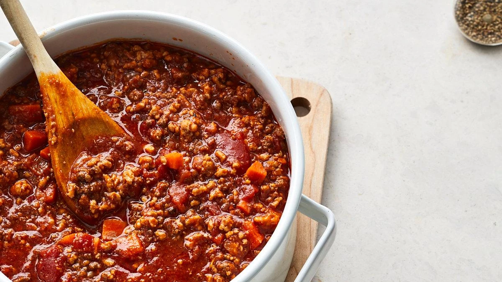
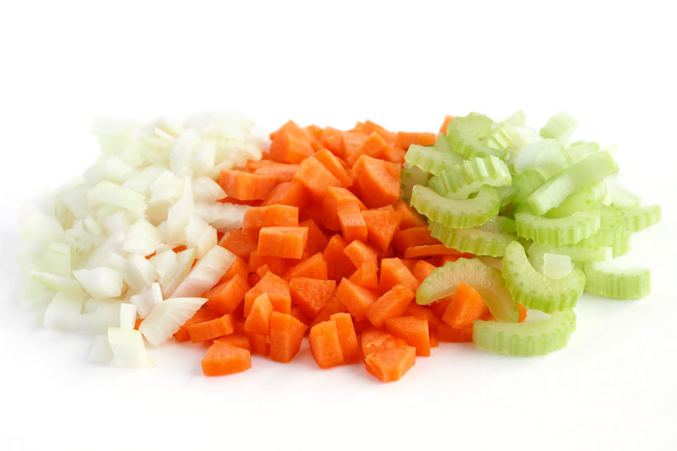
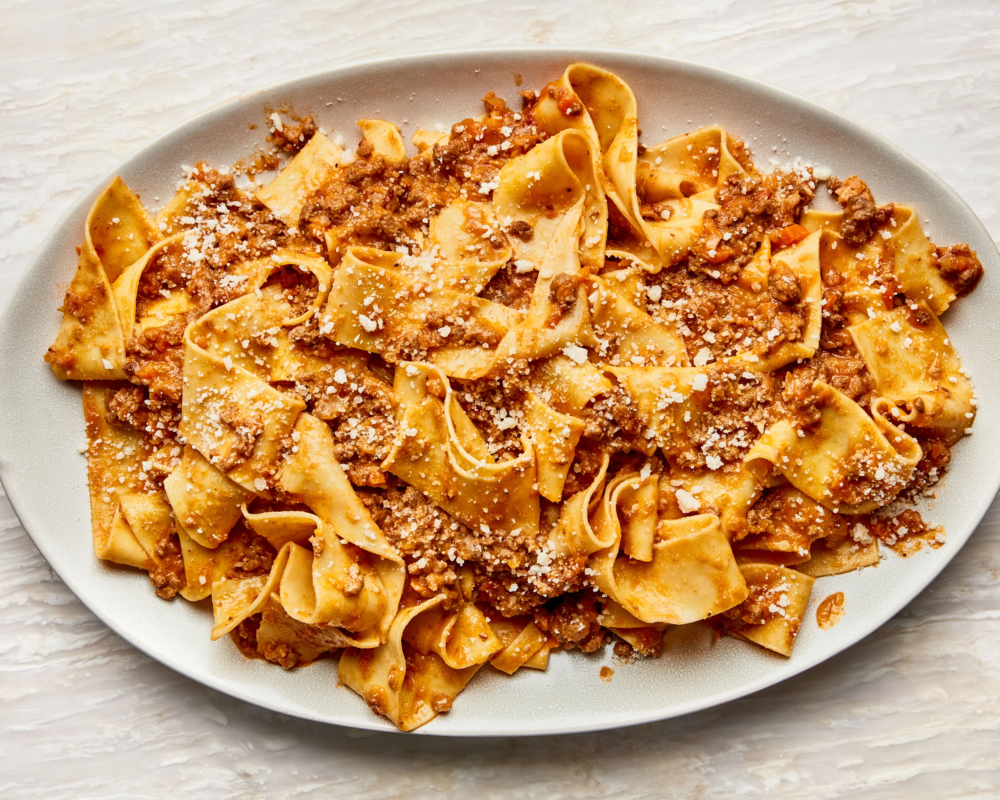

Authentic Bolognese Sauce

Description
This is the authentic bolognese ragu recipe used in bologna.You will find this sauce truly scrumptious.
You will find this sauce truly scrumptious. Just be sure to use papardelle, tagliatelle, penne. Please never use spaghetti.
Ingredients
- 1 red/brown onion chopped
- 3 celery sticks chopped
- 3 carrots chopped
- 500g pork mince
- 300g beef mince
- 200g veal mince
- 1L Italian tomato passata
- 400g peeled tomatoes
- 150g tomato paste
- Extra virgin olive oil
- 1 glass red wine
- 1 mug whole milk
- Salt and pepper
- 1-2L water(boil using kettle)

Steps
- Authentic Bolognese sauce starts with a soffrito, so place a large pot on your stove (medium heat), add a generous amount of extra virgin olive oil and once warm, add onion.
- When the onion begins to look glossy and golden, add carrots, celery and then stir through, leaving to cook for 4-5 minutes.
- Next add ½ glass red wine (118ml) to the authentic Bolognese sauce and leave to simmer on low for a few minutes or until the wine evaporates.
- Add the mince and break it down using a wooden spoon and/or fork before seasoning with only salt and pepper.
- Mix every so often to ensure the mince is all cooked through, leaving to brown.
- Once the water has evaporated, mix in the other half glass of red wine.
- In total, authentic Bolognese sauce should cook for up to 4-5hr and this will make the meat more tender.
- After allowing the wine to evaporate again, mix through the passata, paste and peeled tomatoes.
Tip: Once you have added the passata, add some water to the bottle then swirl around to remove excess from the edges and add to your sauce. No waste!
- Crush tomatoes using the wooden spoon as you stir through.
- After 1.5hr, add 1L/4.2cups boiled water to the pot and mix through. At this point, taste for salt. This is a preference of taste, add only if you want more as no other seasoning is necessary for an authentic Bolognese sauce!
- Then after another hour or so, add more. The trick is when the sauce looks dry, add water, this will thicken the mixture and allow the mince to become more tender.
Tip: Leave the pot uncovered and on a low heat. The more it cooks the better it is!
- Allow the sauce to bubble only a small amount and not spurt everywhere. If it is bubbling too much, turn the heat down.
- When the sauce is 1/2 hr away from being ready, boil 5L water in a second pot then add a tablespoon of rock salt, leaving it to dissolve.
- Once the sauce has been cooking for up to 5hr, remove it from the heat and leave to rest.
- Add your choice of pasta to the water (ours is Pappardelle) and cook according to the packet instructions.
- While the pasta is boiling, prepare a large fry pan for mixing!
- Next add a cup of full cream milk to your sauce and stir through then put it back on the stove for 5 minutes.
- Finally, place a frypan on the stove at a low heat, and add a generous spoonful (or two!) of Bolognese sauce, covering the base.
- Next, add the strained pasta into the pan along with a cup of pasta water.
- Mix this through until the pasta is completely lathered before adding another generous amount of authentic Bolognese sauce and mix again.

How to Serve
Authentic Bolognese sauce should be mixed with a thick pasta like pappardelle or tagliatelle so the sauce can be absorbed well. Once plated add freshly grated parmigianno regianno cheese and serve.
We always make extra Bolognese sauce and store it portioned in containers in the freezer for a quick mid-week meal.